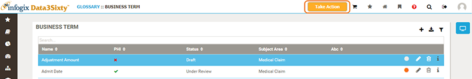

Open topic with navigation
Raising issues
In addition to suggesting changes and modifications to artifacts, you can also raise issues within Infogix Data3Sixty.
- Click the Take Action button:

- On the Take Action page, select the issue that you are reporting.
- Select a severity level in the Criticality field and add a description of the defect in the Description Of Problem field.
- Click Save.